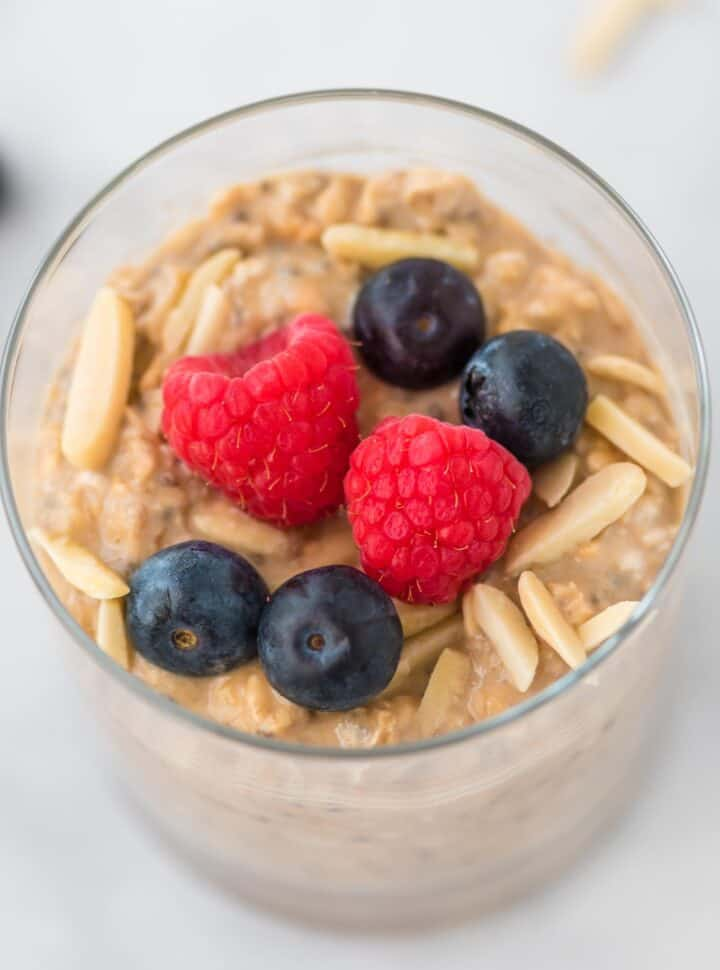

Overnight Oats

A simple healthy meal with berries!
This recipe allows for a large amount of flexibility with the ingredients.
It's very difficult to go wrong when making it.
Ingredients
- 1 banana, sliced
- 1 tablespoon unsweetened almond butter, or more to taste
- 1 1/2 teaspoons chia seeds
- 1 cup rolled oats
- 1 cup unsweetened almond milk
- 1 teaspoon pure maple syrup
- 1/4 teaspoon vanilla extract
Steps
- Place 3 to 4 slices of banana in the bottom of a jar.
Layer 1 1/2 teaspoon of almond butter, 1/2 teaspoon chia seeds, and 1/2 cup oats on top.
Repeat layering remaining almond butter, chia seeds, and oats, leaving a 1-inch gap at the top.
- Mix almond milk, maple syrup, and vanilla extract in a bowl.
Pour over oats, leaving a 1/2-inch gap at the top to allow oats to expands as they soak.
Push a knife or fork vertically through the jar to make sure milk mixture soaks all the way through.
- Cover jar tightly and refrigerate until oats are moist, 4 hours to overnight.